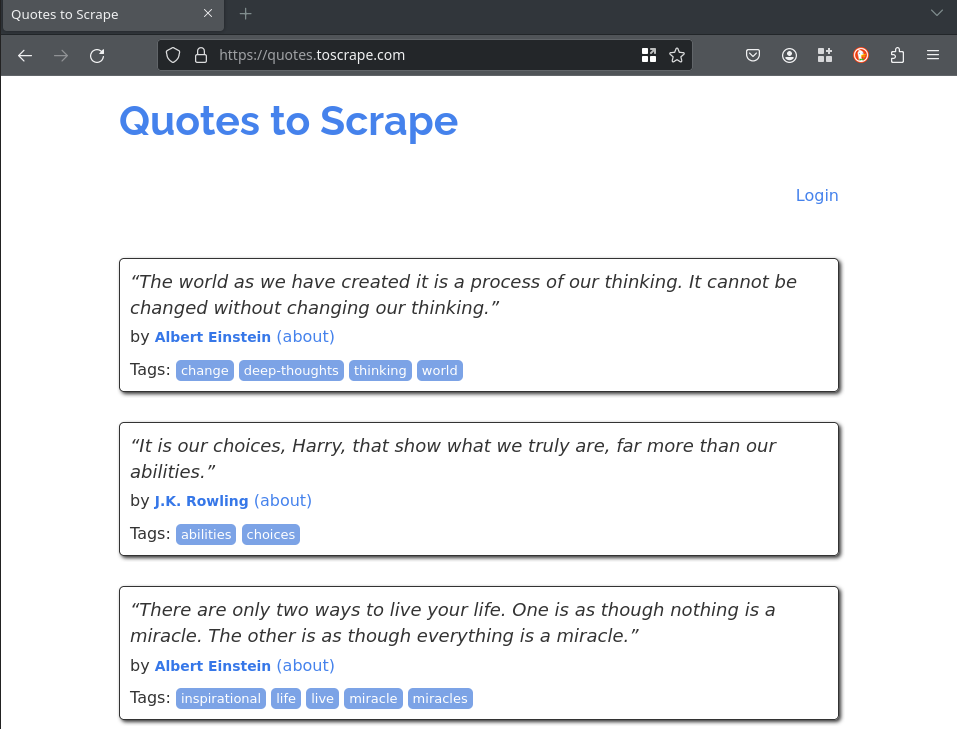
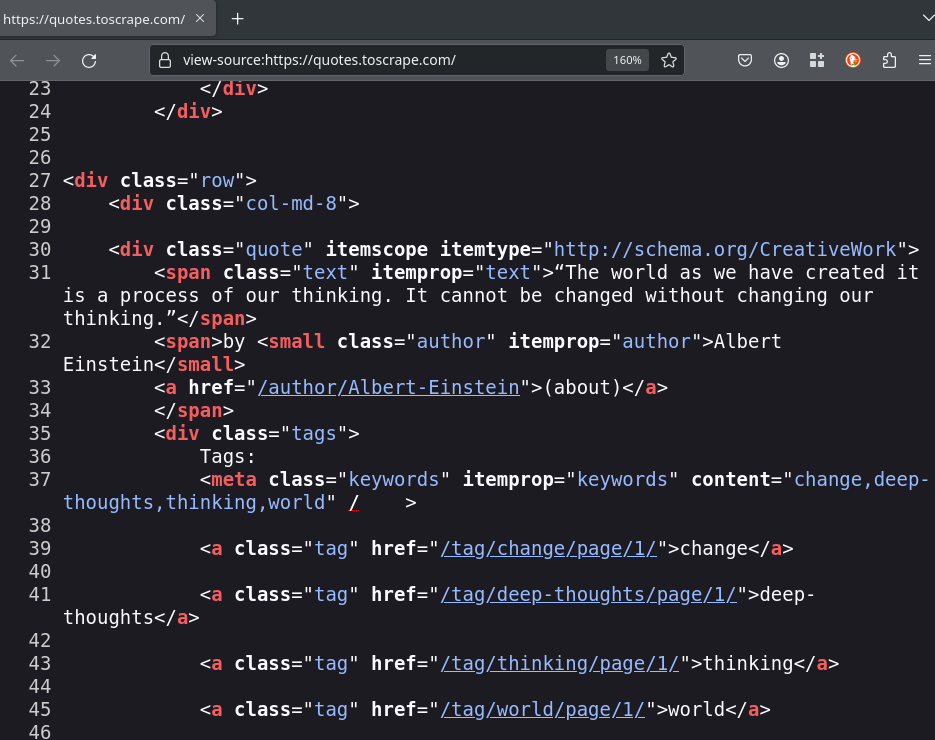
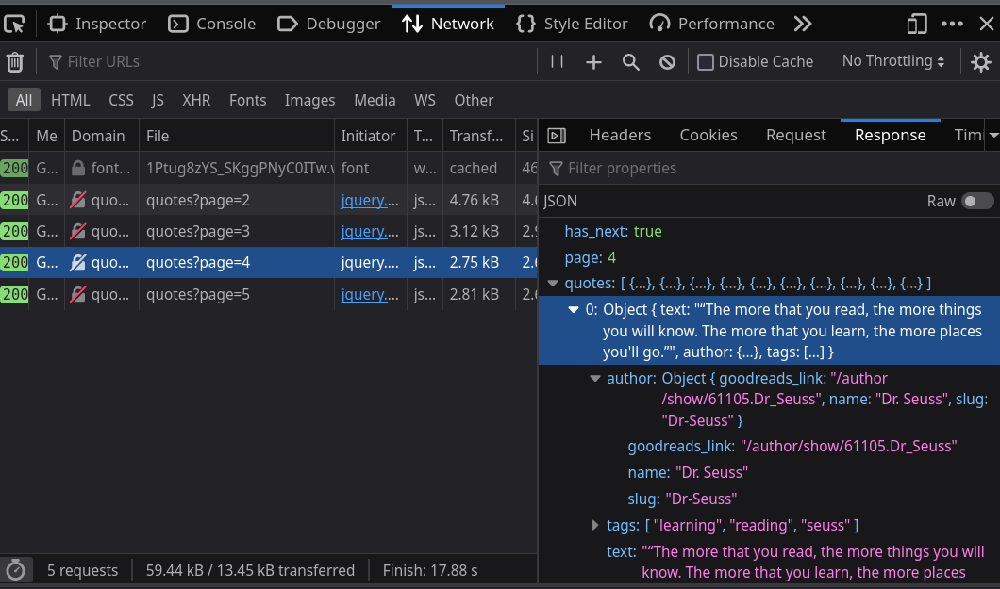
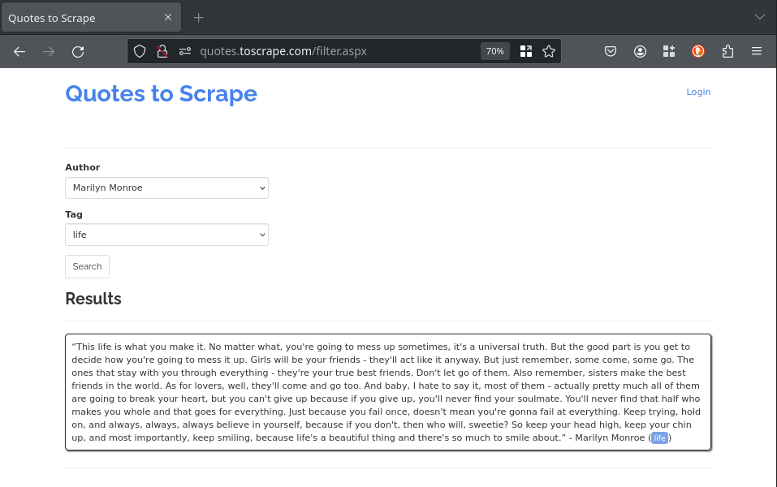
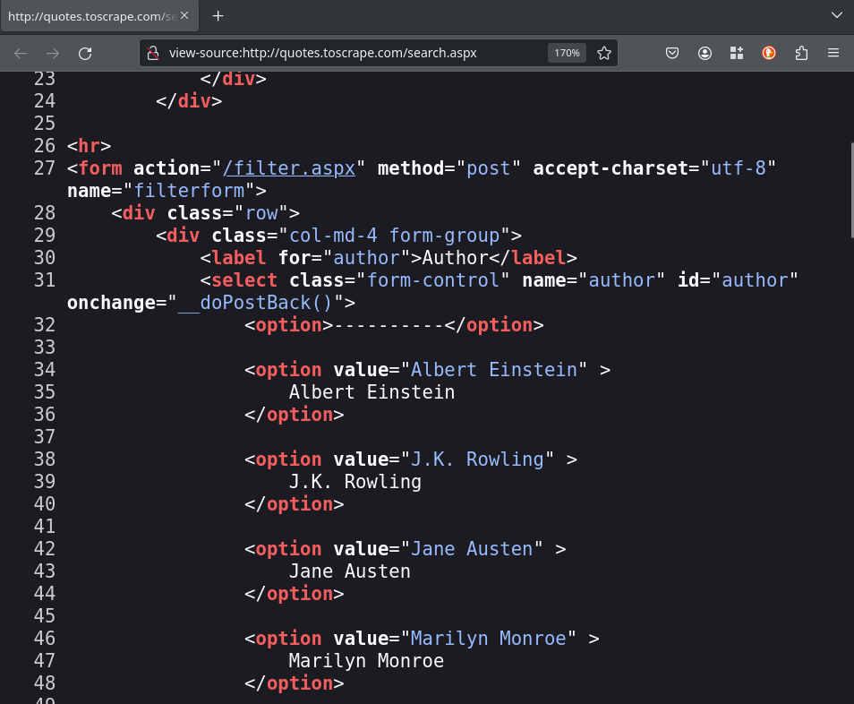
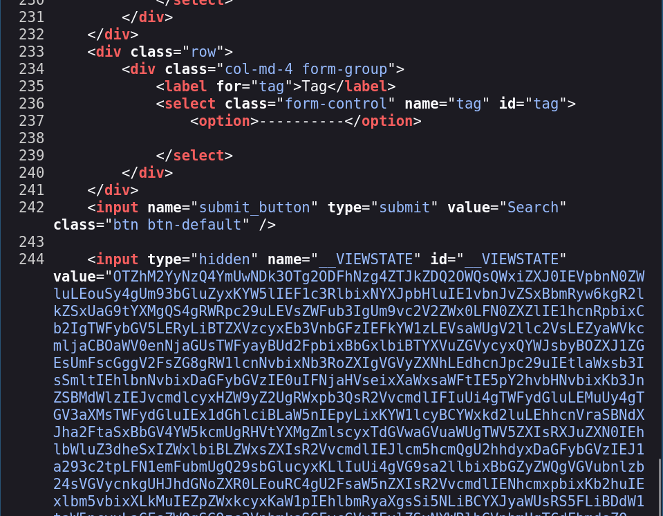
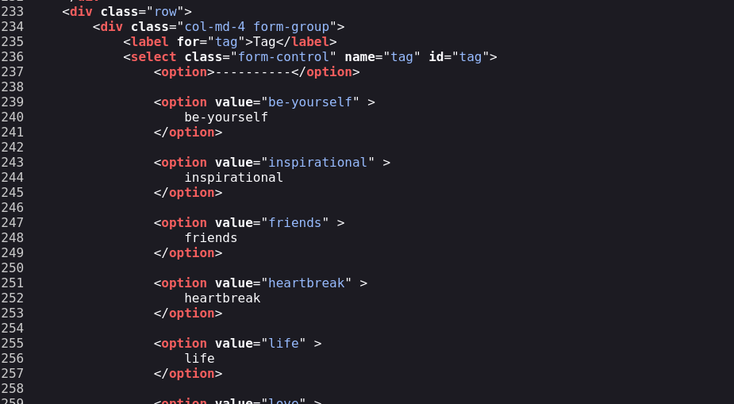

class: center middle # Raspando Dados Da Internet Com Python ### Python Brasil 2023 - 31 / 10 / 2023 --- # Agenda - Fundamentos de Raspagem de Dados 🧑🏫 - Conceitos básicos do Scrapy 🧑🏫 - Raspando uma página HTML simples 👩💻 🧑💻 - Raspando conteúdo gerado por Javascript (API externa) 👩💻 🧑💻 - Raspando conteúdo gerado por Javascript (dados no HTML) 👩💻 🧑💻 - Raspando conteúdo com formulários 👩💻 🧑💻 - Proxies e navegadores headless 🧑🏫 - Sendo educado e não coletando dados que você não devia 🧑🏫 - Perguntas 🧑🏫 👩💻 🧑💻 --- # Renne Rocha  - Senior Python Developer na Shippo - Mantenedor do **Querido Diário** (https://queridodiario.ok.org.br/) - Mantenedor do **Spidermon** (https://spidermon.readthedocs.io/) - Co-fundador do **Laboratório Hacker de Campinas** (https://lhc.net.br) - @rennerocha@chaos.social 🐘 - @rennerocha (outras redes sociais) --- # Por que extrair dados da Internet (de maneira automatizada)? - Precisamos de dados para tomar decisões - Precisamos de dados estruturados obtidos de fontes não estruturadas - Quantidade de dados disponível é muito grande e impossível de ser obtida manualmente --- # Casos de Uso comuns - Dados para treinamento em aprendizado de máquina - Dados governamentais - Análise de preços - Monitoramento de marca - Opiniões de consumidores - Análise de dados de competidores - Dados de imóveis --- # Ferramentas comuns no ecossistema Python - **requests** (https://pypi.org/project/requests/) - **Beautiful Soup** (https://pypi.org/project/beautifulsoup4/) - **parsel** (https://pypi.org/project/parsel/) - **Selenium** (https://www.selenium.dev/) - **Scrapy** (https://scrapy.org/) --- # Grupos de Usuários Python no Brasil ```python # code/groups-requests.py import requests from parsel import Selector start_urls = [ "http://python.org.br", ] for url in start_urls: response = requests.get(url) content = Selector(text=response.text) for group in content.css("h4.card-title::text").getall(): print(group) ``` --- # Grupos de Usuários Python no Brasil ```bash $ python groups-requests.py PythonOnRio PyTche GruPy-GO Pug-Am Pug-MG GruPy-RO GruPy-SP GruPy-BA GruPy-DF GruPy-RP GruPy-MT Pug-MA GruPy Blumenau GrupyBauru GruPy-RN Py013 PUG-PB GruPy Sul Fluminense GruPy-PR Pug-PI Pug-CE (...) ``` --- # E se? - Você tem milhares de URLs? - Você precisa exportar os dados em um determinado formato ou estrutura? - Você precisa gerenciar a freqüência de requisições para não degradar o seu servidor alvo? - Você precisa monitorar a execução dos seus raspadores? - Você precisa executar o seu raspador múltiplas vezes? --- # Por que **Scrapy**?  - Framework para o desenvolvimento de raspadores de dados - Baterias incluídas (analisador de HTML, assíncrono, pipeline de dados, sessões, exportação de dados, etc) - Extensível (middlewares, downloaders, extensões) - Código aberto https://scrapy.org/ --- # Instalação (Linux) ```bash $ git clone https://github.com/rennerocha/pybr2023-tutorial.git tutorial $ cd tutorial $ python3 -m venv .venv $ source .venv/bin/activate $ cd code $ python -m pip install -r requirements (...) Várias linhas instalando bibliotecas... $ scrapy version Scrapy 2.11.0 ``` https://github.com/rennerocha/pybr2023-tutorial ---  https://docs.scrapy.org/en/latest/_images/scrapy_architecture_02.png --- # Spiders Definem as regras de execução do seu raspador - Como encontrar e seguir os links - Como extrair dados estruturados das páginas - Geralmente um por domínio --- # Spiders ```python # code/groups-scrapy.py import scrapy class PythonGroupsSpider(scrapy.Spider): name = "pythongroups" start_urls = [ "http://python.org.br", ] def parse(self, response): groups = response.css('.card') for group in groups: yield { "name": group.css('h4::text').get(), "links": group.css('a::attr(href)').getall(), } ``` --- # Spiders ```python # code/groups-scrapy.py import scrapy *class PythonGroupsSpider(scrapy.Spider): name = "pythongroups" start_urls = [ "http://python.org.br", ] def parse(self, response): groups = response.css('.card') for group in groups: yield { "name": group.css('h4::text').get(), "links": group.css('a::attr(href)').getall(), } ``` --- # Spiders ```python # code/groups-scrapy.py import scrapy class PythonGroupsSpider(scrapy.Spider): * name = "pythongroups" start_urls = [ "http://python.org.br", ] def parse(self, response): groups = response.css('.card') for group in groups: yield { "name": group.css('h4::text').get(), "links": group.css('a::attr(href)').getall(), } ``` --- # Spiders ```python # code/groups-scrapy.py import scrapy class PythonGroupsSpider(scrapy.Spider): name = "pythongroups" * start_urls = [ * "http://python.org.br", * ] def parse(self, response): groups = response.css('.card') for group in groups: yield { "name": group.css('h4::text').get(), "links": group.css('a::attr(href)').getall(), } ``` --- # Spiders ```python # code/groups-scrapy.py import scrapy class PythonGroupsSpider(scrapy.Spider): name = "pythongroups" * def start_requests(self): * initial_urls = [ * "http://python.org.br", * ] * for url in initial_urls: * yield scrapy.Request(url) def parse(self, response): groups = response.css('.card') for group in groups: yield { "name": group.css('h4::text').get(), "links": group.css('a::attr(href)').getall(), } ``` --- # Spiders ```python # code/groups-scrapy.py import scrapy class PythonGroupsSpider(scrapy.Spider): name = "pythongroups" start_urls = [ "http://python.org.br", ] * def parse(self, response): * groups = response.css('.card') * for group in groups: * yield { * "name": group.css('h4::text').get(), * "links": group.css('a::attr(href)').getall(), * } ``` --- class: center, middle # Executando o Spider --- ```bash $ scrapy runspider groups-scrapy.py 2023-10-23 20:10:47 [scrapy.utils.log] INFO: Scrapy 2.11.0 started (bot: scrapybot) 2023-10-23 20:10:47 [scrapy.utils.log] INFO: Versions: lxml 4.9.3.0, libxml2 2.10.3, cssselect 1.2.0, parsel 1.8.1, w3lib 2.1.2, Twisted 22.10.0, Python 3.10.10 (main, Feb 13 2023, 17:33:01) [GCC 11.3.0], pyOpenSSL 23.2.0 (OpenSSL 3.1.3 19 Sep 2023), cryptography 41.0.4, Platform Linux-5.15.0-87-generic-x86_64-with-glibc2.35 2023-10-23 20:10:47 [scrapy.addons] INFO: Enabled addons: [] (...) 2023-10-23 20:10:47 [scrapy.core.engine] INFO: Spider opened 2023-10-23 20:10:47 [scrapy.extensions.logstats] INFO: Crawled 0 pages (at 0 pages/min), scraped 0 items (at 0 items/min) 2023-10-23 20:10:47 [scrapy.extensions.telnet] INFO: Telnet console listening on 127.0.0.1:6023 2023-10-23 20:37:01 [scrapy.core.scraper] DEBUG: Scraped from <200 http://python.org.br> {'name': 'PythonOnRio', 'links': ['http://pythonrio.python.org.br/', 'https://www.facebook.com/pythonrio', 'https://t.me/PythonRio', 'https://twitter.com/pythonrio', 'https://br.groups.yahoo.com/neo/groups/pythonrio/info']} 2023-10-23 20:37:01 [scrapy.core.scraper] DEBUG: Scraped from <200 http://python.org.br> {'name': 'PyTche', 'links': ['http://www.meetup.com/pt/PyTche/', 'https://telegram.me/pytche']} 2023-10-23 20:37:01 [scrapy.core.scraper] DEBUG: Scraped from <200 http://python.org.br> {'name': 'GruPy-GO', 'links': ['https://groups.google.com/forum/#!forum/grupy-go', 'https://t.me/grupygo', 'https://github.com/Grupy-GO', 'https://www.facebook.com/groups/grupygo/']} (...) 2023-10-23 20:10:47 [scrapy.core.engine] INFO: Closing spider (finished) 2023-10-23 20:10:47 [scrapy.statscollectors] INFO: Dumping Scrapy stats: 2023-10-23 20:10:47 [scrapy.core.engine] INFO: Spider closed (finished) ``` --- class: center, middle # Extraindo Dados --- # Seletores CSS ### https://www.w3.org/TR/CSS2/selector.html # XPath ### https://www.w3.org/TR/xpath/all/ --- # Extraindo Dados ``` # code/parsing-css.py import scrapy class PythonGroupsSpider(scrapy.Spider): name = "pythongroups" start_urls = [ "http://python.org.br", ] def parse(self, response): groups = response.css('.card') for group in groups: yield { "name": group.css('h4::text').get(), "links": group.css('a::attr(href)').getall(), } ``` --- # Extraindo Dados ``` # code/parsing-css.py import scrapy class PythonGroupsSpider(scrapy.Spider): name = "pythongroups" start_urls = [ "http://python.org.br", ] def parse(self, response): * groups = response.css('.card') for group in groups: yield { * "name": group.css('h4::text').get(), * "links": group.css('a::attr(href)').getall(), } ``` --- # Extraindo Dados ``` # code/parsing-xpath.py import scrapy class PythonGroupsSpider(scrapy.Spider): name = "pythongroups" start_urls = [ "http://python.org.br", ] def parse(self, response): groups = response.xpath('//div[contains(@class, "card")]') for group in groups: yield { "name": group.xpath('.//h4/text()').get(), "links": group.xpath('.//a/@href').getall(), } ``` --- # Extraindo Dados ``` # code/parsing-xpath.py import scrapy class PythonGroupsSpider(scrapy.Spider): name = "pythongroups" start_urls = [ "http://python.org.br", ] def parse(self, response): * groups = response.xpath('//div[contains(@class, "card")]') for group in groups: yield { * "name": group.xpath('.//h4/text()').get(), * "links": group.xpath('.//a/@href').getall(), } ``` --- # Extraindo Dados ``` # code/parsing-mix.py import scrapy class PythonGroupsSpider(scrapy.Spider): name = "pythongroups" start_urls = [ "http://python.org.br", ] def parse(self, response): groups = response.css('.card') for group in groups: yield { "name": group.xpath('.//h4/text()').get(), "links": group.xpath('.//a/@href').getall(), } ``` --- # Extraindo Dados ``` # code/parsing-mix.py import scrapy class PythonGroupsSpider(scrapy.Spider): name = "pythongroups" start_urls = [ "http://python.org.br", ] def parse(self, response): * groups = response.css('.card') for group in groups: yield { * "name": group.xpath('.//h4/text()').get(), * "links": group.xpath('.//a/@href').getall(), } ``` ## Você pode usar vários tipos de seletores --- # Exemplos de seletores CSS ``` response.css("h1") ``` ``` response.css("ul#offers") ``` ``` response.css(".product") ``` ``` response.css("ul#offers .product a::attr(href)") ``` ``` response.css("ul#offers .product *::text") ``` ``` response.css("ul#offers .product p::text") ``` --- # Exemplos de XPath ``` response.xpath("//h1") ``` ``` response.xpath("//h1[2]") ``` ``` response.xpath("//ul[@id='offers']") ``` ``` response.xpath("//li/a/@href") ``` ``` response.xpath("//li//text()") ``` ``` response.xpath("//li[@class='ad']/following-sibling::li") ``` --- # Exportando os Resultados ``` $ scrapy runspider groups-scrapy.py ``` --- # Exportando os Resultados ``` $ scrapy runspider groups-scrapy.py ``` ``` $ scrapy runspider groups-scrapy.py -o results.csv ``` --- # Exportando os Resultados ``` $ scrapy runspider groups-scrapy.py ``` ``` $ scrapy runspider groups-scrapy.py -o results.csv ``` ``` $ scrapy runspider groups-scrapy.py -o results.json ``` ``` $ scrapy runspider groups-scrapy.py -o results.jl ``` ``` $ scrapy runspider groups-scrapy.py -o results.xml ``` ### Você pode exportar em um formato customizado se você preferir... https://docs.scrapy.org/en/latest/topics/feed-exports.html#topics-feed-exports --- class: center, middle  --- class: center, middle Nos próximos exercícios utilizaremos o conteúdo de http://toscrape.com/, que é um playground com diversos desafios simplificados de problemas encontrados no mundo real para projetos de raspagem de dados. --- # Exercício 1 **Alvo:** https://quotes.toscrape.com/ Nesta página, você irá encontrar uma coleção de citações junto com os seus respectivos autores. Cada citação é acompanhada por um link que redirecion você a uma página dedicada fornecendo detalhes adicionais do autor, a ciração e uma lista de tags associados. Sua tarefa é extrair todas essas informações e exportá-la em um arquivo JSON. ---  ---  --- # Exercício 1 **Alvo:** https://quotes.toscrape.com/ Nesta página, você irá encontrar uma coleção de citações junto com os seus respectivos autores. Cada citação é acompanhada por um link que redirecion você a uma página dedicada fornecendo detalhes adicionais do autor, a ciração e uma lista de tags associados. Sua tarefa é extrair todas essas informações e exportá-la em um arquivo JSON. **TIP**: seu método `parse` pode retornar items ou agendar novo requests para processamento futuro ``` # se o `callback` não é fornecido, o padrão é o método `parse` scrapy.Request("https://someurl.com", callback=self.parse_someurl) ``` --- ``` # code/exercise-1.py import scrapy class QuotesSpider(scrapy.Spider): name = "quotes" allowed_domains = ["quotes.toscrape.com"] start_urls = ["https://quotes.toscrape.com"] def parse(self, response): quotes = response.css(".quote") for quote in quotes: yield { "quote": quote.css(".text::text").get(), "author": quote.css(".author::text").get(), "author_url": response.urljoin( quote.css("span a::attr(href)").get() ), "tags": quote.css(".tag *::text").getall(), } yield scrapy.Request( response.urljoin(response.css(".next a::attr(href)").get()) ) ``` --- ``` # code/exercise-1.py import scrapy *class QuotesSpider(scrapy.Spider): * name = "quotes" * allowed_domains = ["quotes.toscrape.com"] * start_urls = ["https://quotes.toscrape.com"] def parse(self, response): quotes = response.css(".quote") for quote in quotes: yield { "quote": quote.css(".text::text").get(), "author": quote.css(".author::text").get(), "author_url": response.urljoin( quote.css("span a::attr(href)").get() ), "tags": quote.css(".tag *::text").getall(), } yield scrapy.Request( response.urljoin(response.css(".next a::attr(href)").get()) ) ``` --- ``` # code/exercise-1.py import scrapy class QuotesSpider(scrapy.Spider): name = "quotes" allowed_domains = ["quotes.toscrape.com"] start_urls = ["https://quotes.toscrape.com"] * def parse(self, response): * quotes = response.css(".quote") * for quote in quotes: * yield { * "quote": quote.css(".text::text").get(), * "author": quote.css(".author::text").get(), * "author_url": response.urljoin( * quote.css("span a::attr(href)").get() * ), * "tags": quote.css(".tag *::text").getall(), * } * * yield scrapy.Request( * response.urljoin(response.css(".next a::attr(href)").get()) * ) ``` --- ``` # code/exercise-1.py import scrapy class QuotesSpider(scrapy.Spider): name = "quotes" allowed_domains = ["quotes.toscrape.com"] start_urls = ["https://quotes.toscrape.com"] def parse(self, response): * quotes = response.css(".quote") for quote in quotes: yield { "quote": quote.css(".text::text").get(), "author": quote.css(".author::text").get(), "author_url": response.urljoin( quote.css("span a::attr(href)").get() ), "tags": quote.css(".tag *::text").getall(), } yield scrapy.Request( response.urljoin(response.css(".next a::attr(href)").get()) ) ``` --- ``` # code/exercise-1.py import scrapy class QuotesSpider(scrapy.Spider): name = "quotes" allowed_domains = ["quotes.toscrape.com"] start_urls = ["https://quotes.toscrape.com"] def parse(self, response): quotes = response.css(".quote") * for quote in quotes: * yield { * "quote": quote.css(".text::text").get(), * "author": quote.css(".author::text").get(), * "author_url": response.urljoin( * quote.css("span a::attr(href)").get() * ), * "tags": quote.css(".tag *::text").getall(), * } yield scrapy.Request( response.urljoin(response.css(".next a::attr(href)").get()) ) ``` --- ``` # code/exercise-1.py import scrapy class QuotesSpider(scrapy.Spider): name = "quotes" allowed_domains = ["quotes.toscrape.com"] start_urls = ["https://quotes.toscrape.com"] def parse(self, response): quotes = response.css(".quote") for quote in quotes: yield { "quote": quote.css(".text::text").get(), "author": quote.css(".author::text").get(), * "author_url": response.urljoin( * quote.css("span a::attr(href)").get() * ), "tags": quote.css(".tag *::text").getall(), } yield scrapy.Request( response.urljoin(response.css(".next a::attr(href)").get()) ) ``` --- ``` # code/exercise-1.py import scrapy class QuotesSpider(scrapy.Spider): name = "quotes" allowed_domains = ["quotes.toscrape.com"] start_urls = ["https://quotes.toscrape.com"] def parse(self, response): quotes = response.css(".quote") for quote in quotes: yield { "quote": quote.css(".text::text").get(), "author": quote.css(".author::text").get(), "author_url": response.urljoin( quote.css("span a::attr(href)").get() ), * "tags": quote.css(".tag *::text").getall(), } yield scrapy.Request( response.urljoin(response.css(".next a::attr(href)").get()) ) ``` --- ``` # code/exercise-1.py import scrapy class QuotesSpider(scrapy.Spider): name = "quotes" allowed_domains = ["quotes.toscrape.com"] start_urls = ["https://quotes.toscrape.com"] def parse(self, response): quotes = response.css(".quote") for quote in quotes: yield { "quote": quote.css(".text::text").get(), "author": quote.css(".author::text").get(), "author_url": response.urljoin( quote.css("span a::attr(href)").get() ), "tags": quote.css(".tag *::text").getall(), } * yield scrapy.Request( * response.urljoin(response.css(".next a::attr(href)").get()) * ) ``` --- # Exercício 2 **Alvo:** https://quotes.toscrape.com/scroll Houve uma modificação no layout do site anterior. Agora, nossas citações aparecem em um scroll infinito. O que significa que o novo conteúdo é carregado dinamicamente quando você atinge a parte inferior da página. **DICA**: Para compreender esse comportamento, abra o seu navegador e acesse nossa página alvo. Em seguida pressione **F12** para abrir as ferramentas de desenvolvimento e seleciona a aba "_Network_". Observe o que acontece nos requests quando vocÇe navega para o fim da página. --- <img class="fragment" src="images/exercise-2-scroll.gif" width="100%"> ---  --- <img class="fragment" src="images/exercise-2-url.png" width="100%"> --- ```python # code/exercise-2.py import scrapy class QuotesScrollSpider(scrapy.Spider): name = "quotes_scroll" allowed_domains = ["quotes.toscrape.com"] api_url = "https://quotes.toscrape.com/api/quotes?page={page}" def start_requests(self): yield scrapy.Request(self.api_url.format(page=1)) def parse(self, response): data = response.json() current_page = data.get("page") for quote in data.get("quotes"): yield { "quote": quote.get("text"), "author": quote.get("author").get("name"), "author_url": response.urljoin( quote.get("author").get("goodreads_link") ), "tags": quote.get("tags"), } if data.get("has_next"): next_page = current_page + 1 yield scrapy.Request( self.api_url.format(page=next_page), ) ``` --- ```python # code/exercise-2.py import scrapy class QuotesScrollSpider(scrapy.Spider): name = "quotes_scroll" allowed_domains = ["quotes.toscrape.com"] * api_url = "https://quotes.toscrape.com/api/quotes?page={page}" * def start_requests(self): * yield scrapy.Request(self.api_url.format(page=1)) def parse(self, response): data = response.json() current_page = data.get("page") for quote in data.get("quotes"): yield { "quote": quote.get("text"), "author": quote.get("author").get("name"), "author_url": response.urljoin( quote.get("author").get("goodreads_link") ), "tags": quote.get("tags"), } if data.get("has_next"): next_page = current_page + 1 yield scrapy.Request( self.api_url.format(page=next_page), ) ``` --- ```python # code/exercise-2.py import scrapy class QuotesScrollSpider(scrapy.Spider): name = "quotes_scroll" allowed_domains = ["quotes.toscrape.com"] api_url = "https://quotes.toscrape.com/api/quotes?page={page}" def start_requests(self): yield scrapy.Request(self.api_url.format(page=1)) def parse(self, response): * data = response.json() current_page = data.get("page") for quote in data.get("quotes"): yield { "quote": quote.get("text"), "author": quote.get("author").get("name"), "author_url": response.urljoin( quote.get("author").get("goodreads_link") ), "tags": quote.get("tags"), } if data.get("has_next"): next_page = current_page + 1 yield scrapy.Request( self.api_url.format(page=next_page), ) ``` --- ```python # code/exercise-2.py import scrapy class QuotesScrollSpider(scrapy.Spider): name = "quotes_scroll" allowed_domains = ["quotes.toscrape.com"] api_url = "https://quotes.toscrape.com/api/quotes?page={page}" def start_requests(self): yield scrapy.Request(self.api_url.format(page=1)) def parse(self, response): data = response.json() * current_page = data.get("page") for quote in data.get("quotes"): yield { "quote": quote.get("text"), "author": quote.get("author").get("name"), "author_url": response.urljoin( quote.get("author").get("goodreads_link") ), "tags": quote.get("tags"), } * if data.get("has_next"): * next_page = current_page + 1 * yield scrapy.Request( * self.api_url.format(page=next_page), * ) ``` --- ```python # code/exercise-2.py import scrapy class QuotesScrollSpider(scrapy.Spider): name = "quotes_scroll" allowed_domains = ["quotes.toscrape.com"] api_url = "https://quotes.toscrape.com/api/quotes?page={page}" def start_requests(self): yield scrapy.Request(self.api_url.format(page=1)) def parse(self, response): data = response.json() current_page = data.get("page") * for quote in data.get("quotes"): * yield { * "quote": quote.get("text"), * "author": quote.get("author").get("name"), * "author_url": response.urljoin( * quote.get("author").get("goodreads_link") * ), * "tags": quote.get("tags"), * } if data.get("has_next"): next_page = current_page + 1 yield scrapy.Request( self.api_url.format(page=next_page), ) ``` --- # Excercício 3 **Alvo:** https://quotes.toscrape.com/js/ O spider que você criou no primeiro exercício parou de funcionar. Embora não apareça nenhum erro nos logs, nenhum dado está sendo retornado. **DICA**: iPara iniciar a investigação do problema, abra o seu navegador na página alvo. Pressione **Ctrl+U** (_Ver código fonte_) para inspecionar o HTML da página. --- <img class="fragment" src="images/exercise-3-js.png" width="100%"> --- ```python import json import scrapy class QuotesJSSpider(scrapy.Spider): name = "quotes_js" allowed_domains = ["quotes.toscrape.com"] start_urls = ["https://quotes.toscrape.com/js/"] def parse(self, response): raw_quotes = response.xpath( "//script" ).re_first(r"var data = ((?s:\[.*?\]));") quotes = json.loads(raw_quotes) for quote in quotes: yield { "quote": quote.get("text"), "author": quote.get("author").get("name"), "author_url": response.urljoin( quote.get("author").get("goodreads_link") ), "tags": quote.get("tags"), } yield scrapy.Request( response.urljoin(response.css(".next a::attr(href)").get()) ) ``` --- ```python import json import scrapy class QuotesJSSpider(scrapy.Spider): name = "quotes_js" allowed_domains = ["quotes.toscrape.com"] start_urls = ["https://quotes.toscrape.com/js/"] def parse(self, response): * raw_quotes = response.xpath( * "//script" * ).re_first(r"var data = ((?s:\[.*?\]));") quotes = json.loads(raw_quotes) for quote in quotes: yield { "quote": quote.get("text"), "author": quote.get("author").get("name"), "author_url": response.urljoin( quote.get("author").get("goodreads_link") ), "tags": quote.get("tags"), } yield scrapy.Request( response.urljoin(response.css(".next a::attr(href)").get()) ) ``` --- ```python import json import scrapy class QuotesJSSpider(scrapy.Spider): name = "quotes_js" allowed_domains = ["quotes.toscrape.com"] start_urls = ["https://quotes.toscrape.com/js/"] def parse(self, response): raw_quotes = response.xpath( "//script" ).re_first(r"var data = ((?s:\[.*?\]));") * quotes = json.loads(raw_quotes) for quote in quotes: yield { "quote": quote.get("text"), "author": quote.get("author").get("name"), "author_url": response.urljoin( quote.get("author").get("goodreads_link") ), "tags": quote.get("tags"), } yield scrapy.Request( response.urljoin(response.css(".next a::attr(href)").get()) ) ``` --- ```python import json import scrapy class QuotesJSSpider(scrapy.Spider): name = "quotes_js" allowed_domains = ["quotes.toscrape.com"] start_urls = ["https://quotes.toscrape.com/js/"] def parse(self, response): raw_quotes = response.xpath( "//script" ).re_first(r"var data = ((?s:\[.*?\]));") quotes = json.loads(raw_quotes) * for quote in quotes: * yield { * "quote": quote.get("text"), * "author": quote.get("author").get("name"), * "author_url": response.urljoin( * quote.get("author").get("goodreads_link") * ), * "tags": quote.get("tags"), * } yield scrapy.Request( response.urljoin(response.css(".next a::attr(href)").get()) ) ``` --- ```python import json import scrapy class QuotesJSSpider(scrapy.Spider): name = "quotes_js" allowed_domains = ["quotes.toscrape.com"] start_urls = ["https://quotes.toscrape.com/js/"] def parse(self, response): raw_quotes = response.xpath( "//script" ).re_first(r"var data = ((?s:\[.*?\]));") quotes = json.loads(raw_quotes) for quote in quotes: yield { "quote": quote.get("text"), "author": quote.get("author").get("name"), "author_url": response.urljoin( quote.get("author").get("goodreads_link") ), "tags": quote.get("tags"), } * yield scrapy.Request( * response.urljoin(response.css(".next a::attr(href)").get()) * ) ``` --- # Exercício 4 **Alvo:** http://quotes.toscrape.com/search.aspx Este site é um pouco diferente. Nós temos duas caixas de seleção onde escolhemos um autor, e então podemos selecionar uma tag que esteja associado com uma citação do autor selecionado. **DICA**: `scrapy.FormRequest` pode ser usado para lidar com formulários HTML. ``` scrapy.FormRequest("https://someurl.com", formdata={"form_data": "value"}) ``` ---  ---  ---  ---  --- ```python # code/exercise-4.py import scrapy class QuotesViewStateSpider(scrapy.Spider): name = "quotes_viewstate" allowed_domains = ["quotes.toscrape.com"] start_urls = ["http://quotes.toscrape.com/search.aspx"] def parse(self, response): authors = response.css("#author option::attr(value)").getall() view_state = response.css("#__VIEWSTATE::attr(value)").get() for author in authors: yield scrapy.FormRequest( response.urljoin(response.css("form::attr(action)").get()), callback=self.parse_author_tags, formdata={ "__VIEWSTATE": view_state, "author": author, }, cb_kwargs={"author": author} ``` --- ```python # code/exercise-4.py import scrapy class QuotesViewStateSpider(scrapy.Spider): name = "quotes_viewstate" allowed_domains = ["quotes.toscrape.com"] start_urls = ["http://quotes.toscrape.com/search.aspx"] def parse(self, response): authors = response.css("#author option::attr(value)").getall() * view_state = response.css("#__VIEWSTATE::attr(value)").get() for author in authors: yield scrapy.FormRequest( response.urljoin(response.css("form::attr(action)").get()), callback=self.parse_author_tags, formdata={ "__VIEWSTATE": view_state, "author": author, }, cb_kwargs={"author": author} ``` --- ```python # code/exercise-4.py import scrapy class QuotesViewStateSpider(scrapy.Spider): name = "quotes_viewstate" allowed_domains = ["quotes.toscrape.com"] start_urls = ["http://quotes.toscrape.com/search.aspx"] def parse(self, response): authors = response.css("#author option::attr(value)").getall() view_state = response.css("#__VIEWSTATE::attr(value)").get() for author in authors: * yield scrapy.FormRequest( response.urljoin(response.css("form::attr(action)").get()), callback=self.parse_author_tags, formdata={ "__VIEWSTATE": view_state, "author": author, }, cb_kwargs={"author": author} ``` --- ```python # code/exercise-4.py import scrapy class QuotesViewStateSpider(scrapy.Spider): name = "quotes_viewstate" allowed_domains = ["quotes.toscrape.com"] start_urls = ["http://quotes.toscrape.com/search.aspx"] def parse(self, response): authors = response.css("#author option::attr(value)").getall() view_state = response.css("#__VIEWSTATE::attr(value)").get() for author in authors: yield scrapy.FormRequest( response.urljoin(response.css("form::attr(action)").get()), callback=self.parse_author_tags, * formdata={ * "__VIEWSTATE": view_state, * "author": author, }, cb_kwargs={"author": author} ``` --- ```python # code/exercise-4.py import scrapy class QuotesViewStateSpider(scrapy.Spider): name = "quotes_viewstate" allowed_domains = ["quotes.toscrape.com"] start_urls = ["http://quotes.toscrape.com/search.aspx"] def parse(self, response): authors = response.css("#author option::attr(value)").getall() view_state = response.css("#__VIEWSTATE::attr(value)").get() for author in authors: yield scrapy.FormRequest( response.urljoin(response.css("form::attr(action)").get()), callback=self.parse_author_tags, formdata={ "__VIEWSTATE": view_state, "author": author, }, * cb_kwargs={"author": author} * def parse_author_tags(self, response, author): * ... ``` --- ```python # code/exercise-4.py class QuotesViewStateSpider(scrapy.Spider): (...) def parse_author_tags(self, response, author): tags = response.css("#tag option::attr(value)").getall() view_state = response.css("#__VIEWSTATE::attr(value)").get() for tag in tags: yield scrapy.FormRequest( response.urljoin(response.css("form::attr(action)").get()), callback=self.parse_tag_results, formdata={ "__VIEWSTATE": view_state, "author": author, "tag": tag, }, ) def parse_tag_results(self, response): quotes = response.css(".quote") for quote in quotes: yield { "quote": quote.css(".content::text").get(), "author": quote.css(".author::text").get(), "tag": quote.css(".tag::text").get(), } ``` --- ```python # code/exercise-4.py class QuotesViewStateSpider(scrapy.Spider): (...) def parse_author_tags(self, response, author): tags = response.css("#tag option::attr(value)").getall() * view_state = response.css("#__VIEWSTATE::attr(value)").get() for tag in tags: yield scrapy.FormRequest( response.urljoin(response.css("form::attr(action)").get()), callback=self.parse_tag_results, formdata={ "__VIEWSTATE": view_state, "author": author, "tag": tag, }, ) def parse_tag_results(self, response): quotes = response.css(".quote") for quote in quotes: yield { "quote": quote.css(".content::text").get(), "author": quote.css(".author::text").get(), "tag": quote.css(".tag::text").get(), } ``` --- ```python # code/exercise-4.py class QuotesViewStateSpider(scrapy.Spider): (...) def parse_author_tags(self, response, author): tags = response.css("#tag option::attr(value)").getall() view_state = response.css("#__VIEWSTATE::attr(value)").get() for tag in tags: * yield scrapy.FormRequest( * response.urljoin(response.css("form::attr(action)").get()), * callback=self.parse_tag_results, * formdata={ * "__VIEWSTATE": view_state, * "author": author, * "tag": tag, * }, * ) def parse_tag_results(self, response): quotes = response.css(".quote") for quote in quotes: yield { "quote": quote.css(".content::text").get(), "author": quote.css(".author::text").get(), "tag": quote.css(".tag::text").get(), } ``` --- ```python # code/exercise-4.py class QuotesViewStateSpider(scrapy.Spider): (...) def parse_author_tags(self, response, author): tags = response.css("#tag option::attr(value)").getall() view_state = response.css("#__VIEWSTATE::attr(value)").get() for tag in tags: yield scrapy.FormRequest( response.urljoin(response.css("form::attr(action)").get()), callback=self.parse_tag_results, formdata={ "__VIEWSTATE": view_state, "author": author, "tag": tag, }, ) * def parse_tag_results(self, response): * quotes = response.css(".quote") * for quote in quotes: * yield { * "quote": quote.css(".content::text").get(), * "author": quote.css(".author::text").get(), * "tag": quote.css(".tag::text").get(), * } ``` --- # Monitorando - Precisamos garantir que estamos extraíndo os dados que precisamos, então monitorar a execução dos seus spiders é crucial - Spidermon é uma extensão do Scrapy que te ajuda a **monitorar** nossos spiders e tomar **ações** baseadas nos resultados - https://spidermon.readthedocs.io/ --- class: center, middle # Além dos Spiders --- # Proxies - Evitam que seu IP seja banido e serviços anti-bot - Utilizados em raspagens de larga escala - Acesso a conteúdo limitado regionalmente - Datacenter vs residential vs mobile proxies - Facilmente integrago com Scrapy com o use de extensões --- # Navegadores Headless - Usados principalmente em páginas que dependem pesadamente de conteúdo renderizado com Javascript usando frameworks como React, Vue e Angular - Como utilizam um navegador real (mesmo que não tenham um interface gráfica visível), raspadores utilizando navegadores headless geralmente são mais lentos e complicados de escalar - As soluções existentes são desenvolvidas normalmente para testes automatizados e não para raspagem de dados --- # Navegadores Headless - **Selenium** (https://www.selenium.dev/) - **Playwright** (https://playwright.dev/) - **scrapy-playwright** (https://pypi.org/project/scrapy-playwright/) --- ``` # code/quotes-playwright.py import scrapy from scrapy_playwright.page import PageMethod class QuotesPlaywrightSpider(scrapy.Spider): name = "quotes-playwright" custom_settings = { "DOWNLOAD_HANDLERS": { "http": "scrapy_playwright.handler.ScrapyPlaywrightDownloadHandler", "https": "scrapy_playwright.handler.ScrapyPlaywrightDownloadHandler", }, "TWISTED_REACTOR": "twisted.internet.asyncioreactor.AsyncioSelectorReactor" } def start_requests(self): yield scrapy.Request( url="http://quotes.toscrape.com/scroll", meta=dict( playwright=True, playwright_include_page=True, playwright_page_methods=[ PageMethod("wait_for_selector", "div.quote"), PageMethod( "evaluate", "window.scrollBy(0, document.body.scrollHeight)", ), PageMethod( "wait_for_selector", "div.quote:nth-child(11)" ), ], ), ) ``` --- ``` class QuotesPlaywrightSpider(scrapy.Spider): (...) async def parse(self, response): page = response.meta["playwright_page"] await page.screenshot(path="quotes.png", full_page=True) await page.close() return { "quote_count": len(response.css("div.quote")) } ``` --- # O que mais você precisa se preocupar? - Seja educado. Não raspe tão rápido a ponto de interferir na operação do seu site alvo - Siga os termos de serviço da página - Seja cuidadoso ao raspar dados pessoais - É ilegal? --- class: center, middle # Obrigado! --- class: center, middle # Perguntas?